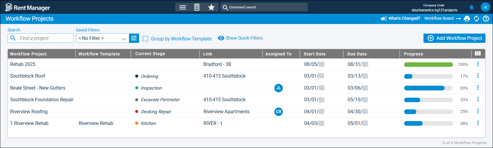

Source: https://rmxhelp.rentmanager.com/Topics/Express/CSH/Workflow-Projects.htm
Workflow Projects (Page)
The Workflow Projects page displays an overview of each workflow project in Rent Manager. A workflow project is used to organize and coordinate your team to accomplish a major goal. Each workflow project is composed of stages, which are distinct phases of the project. Each stage contains steps (service issues and/or tasks), and as each step is closed, the project progresses toward completion. Additionally, you can require that steps be completed in order to ensure the workflow project is accomplished in the correct sequence.
Related Privileges
| Group | Privilege | Column |
|---|---|---|
| Service Manager | Workflow Projects | View |
For more information, refer to Control User Access.
To view the and manage workflow projects, go to  arrow_forward Services arrow_forward Workflows arrow_forward Workflow Projects.
arrow_forward Services arrow_forward Workflows arrow_forward Workflow Projects.

Filter Options
The following filter options are available on this page.
| Options | Descriptions | ||||||||||||||||||||
|---|---|---|---|---|---|---|---|---|---|---|---|---|---|---|---|---|---|---|---|---|---|
|
Saved Filters |
Use the drop-down to select a saved workflow project filter or click |
||||||||||||||||||||
|
Search |
Allows you to display only workflow projects with names that match what you enter in this field. |
||||||||||||||||||||
|
Group by Workflow Template |
Organize workflow projects into separate sections based on their assigned Workflow Template. Workflow projects with no template display in the Individual Projects section. |
||||||||||||||||||||
|
|
|
||||||||||||||||||||
Column Descriptions
The following columns are available on this page. By default, some columns display only if added via  .
.
| Default Column | Description |
|---|---|
|
Assigned To |
The initials or contact image of the user assigned to the project's current issue or task. If no user is assigned, the column is blank. |
|
Current Stage |
The name and color of the current stage of the workflow project. |
|
Due Date |
The date by which all issues and tasks in the workflow project should be completed. |
|
Link |
The name of the entity with which the workflow project is associated. For example, a project linked to a property would display the property's Name. |
|
Progress |
A progress bar that fills as service issues and tasks within the workflow project are closed. When all issues are closed, the bar turns green to indicate that the project is complete. |
|
Start Date |
The date the workflow project begins. |
|
Workflow Project |
The name of the workflow project (e.g., Kitchen and Bath Renovation, Repave Parking Lot, Renovate New Property, Landscaping Overhaul). This column cannot be deselected. |
|
Workflow Template |
The name of the workflow template assigned to project. If no template is assigned, the column is blank. |
|
Available Column |
Description |
|
Category |
The default service issue category (e.g., Property Wide, Maintenance, Electrical, Plumbing, Emergency, Office) for all issues within the workflow project, as selected in the Settings pop-up. If a category is not assigned, <Unassigned> displays. |
|
Completed |
A |
|
Create Date |
The date that the workflow project was first created and saved in Rent Manager. |
|
Create User |
The name of the user who created the workflow project. |
|
Description |
Any additional notes or comments regarding the workflow project as entered on the workflow project's details page. |
|
Enforce Sequence |
A |
|
Parent Name |
The name of the workflow project designated as the parent of this workflow project. If there is no parent project, this column is blank. |
|
Priority |
The default service issue priority (e.g., Critical, High, Medium, Low) for all issues within the workflow project, as selected in the project's settings. If a priority was not assigned, <Unassigned> displays. |
|
Properties |
The properties linked to service issues within the workflow project. |
|
Status |
The default service issue status (e.g., New, Work in Progress, Resolved, Unresolved) for all issues within the workflow project, as selected in the project's settings. If a status was not assigned, <Unassigned> displays. |
|
Vendor |
The name of the default vendor assigned to all issues within the workflow project, as selected in the project's settings. |
Row Actions
Related Privileges
If a workflow project was generated from a workflow template with the setting Restrict editing on workflow projects with this workflow template enabled, the row actions Delete, Add Issue, and Add Task require the following privilege.
| Group | Privilege | Column |
|---|---|---|
| Service Manager | Edit projects that are using a restricted workflow template | Enabled |
For more information, refer to Control User Access.
The following row actions are available by clicking  .
.
| Option | Description | |||||||||||
|---|---|---|---|---|---|---|---|---|---|---|---|---|
|
Add Issue |
Related Privileges
For more information, refer to Control User Access. Add a service issue step to the latest stage of the workflow project. For more information, refer to Workflow Project Issue Details (Pop-Up). |
|||||||||||
|
Add Task |
Related Privileges
For more information, refer to Control User Access. Add a task step to the latest stage of the workflow project. For more information, refer to Workflow Task Details (Pop-Up). |
|||||||||||
|
Delete |
Related Privileges The privileges required for this action depend on what item(s) you want to delete. Deleting issues and tasks in a project require the corresponding privilege.
For more information, refer to Control User Access. Permanently delete the project and, optionally, the issues and tasks linked to it. Warning This action cannot be undone. |
|||||||||||
|
Project Details |
Open the project's details page, from which you can configure project's settings, stages, and steps. |